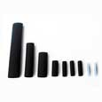
Комплект для муфтирования кабеля PES-G
Для соединения секций саморегулирующегося греющего кабеля Lavita между собой или с питающими проводами, а также изготовления концевых муфт. Производство: Южная Корея.
Муфты, термоусадочные трубки, монтажные ленты и готовые наборы для надёжного подключения и монтажа систем электрообогрева.

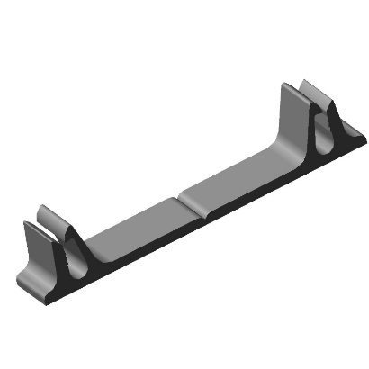
Подберём аксессуары с учётом типа кабеля, способа подключения и условий эксплуатации.
Подбор и монтаж электрических соединений выполняют по инструкции производителя с соблюдением требований электробезопасности.
Для соединения секций греющего кабеля, подключения к питающим проводам и устройства герметичных концевых заделок.

Для соединения секций саморегулирующегося греющего кабеля Lavita между собой или с питающими проводами, а также изготовления концевых муфт. Производство: Южная Корея.
Для монтажа саморегулирующегося греющего кабеля ESR в обычных и взрывоопасных зонах. Содержит элементы для соединительной и концевой заделок.
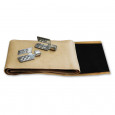
Набор для подключения инфракрасной плёнки. Производство: Россия.
Ленты для фиксации греющего кабеля при монтаже систем электрообогрева. Актуальная цена указана за штуку.
Для крепления греющего кабеля на трубах с высокой температурой. Постоянное воздействие до 200 °C, длина 33 м, ширина 11 мм, клеевой слой на основе каучука.
Для крепления греющего кабеля на трубах с высокой температурой. Постоянное воздействие до 135 °C, длина 50 м, ширина 12 мм, модифицированный каучуковый клеевой слой.
Комплекты и вводы для герметичного подключения греющего кабеля к трубопроводу, под теплоизоляцию и во взрывозащищённое оборудование.
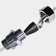
В комплект входит муфта с сальником. Возможна установка в переходники с резьбой 3/4″ и 1″.
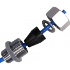
В комплект входит муфта с сальником. Возможна установка в переходники с резьбой 1/2″.
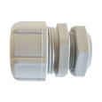
Для ввода греющего кабеля под теплоизоляцию. Пластиковый корпус, два сальника, стальная крепёжная пластина и стопорная гайка.
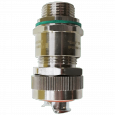
Никелированная латунь, резьба M20 × 1,5, кабель 6–14 мм, металлорукав МРПИ-15. Защита IP66/68, 1ExdIICGbX и ExtbIIICDbx; температура эксплуатации от −60 до +130 °C.
Готовые шнуры ПВС-ВП с герметичной евровилкой для подключения греющего кабеля к электросети.
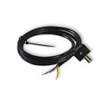
Для подключения греющего кабеля к электросети. Укомплектован герметичной евровилкой.
Для подключения греющего кабеля к электросети. Укомплектован герметичной евровилкой.
Ударопрочные монтажные коробки ABOX с клеммниками для аккуратного и удобного подключения оборудования.
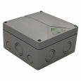
140 × 140 × 79 мм, вводы M32 с диапазоном уплотнения 13–23 мм, IP65. Высокорасположенная пятиполюсная клемма 10 мм².
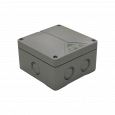
110 × 110 × 67 мм, вводы M25 с диапазоном уплотнения 9–18,5 мм, IP65. Высокорасположенная пятиполюсная клемма 6 мм².
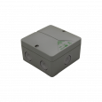
93 × 93 × 55 мм, вводы M20 с диапазоном уплотнения 2–16 мм, IP65. Пятиполюсная клемма 4 мм².
Готовые типы крепления нагревательного кабеля для желобов, водостоков, воронок, карнизов и других элементов кровли.
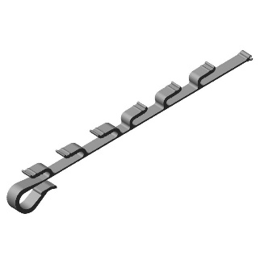
Для желобов диаметром до 180 мм. При большем диаметре используется дополнительная крепёжная планка. Рекомендуемый шаг — 500 мм.
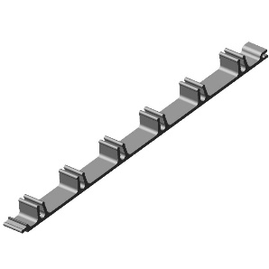
Для фиксации кабеля на кровле с уклоном до 25°. Рекомендуемый шаг между зажимами — 500 мм.
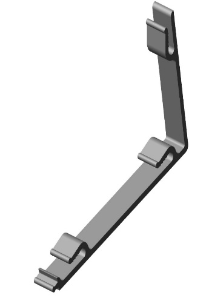
Для фиксации кабеля в водоотливе на кровле. Рекомендуемый шаг между зажимами — 500 мм.
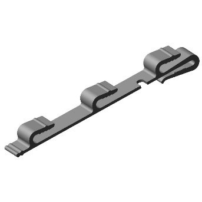
Для фиксации кабеля в водосточной воронке. Рекомендуется 3–4 зажима на одну воронку.
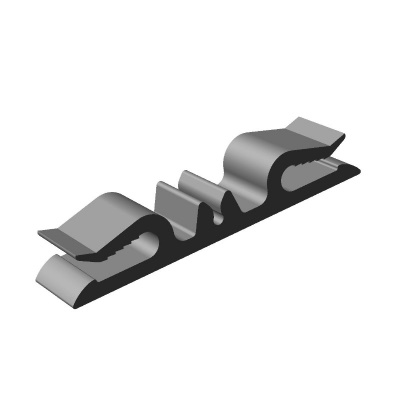
Для фиксации кабеля в водосточной трубе с тросом в ПВХ-оболочке 2/3. Рекомендуемый шаг — 700 мм.
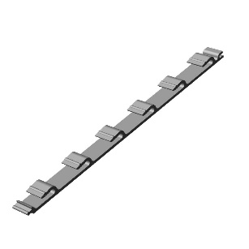
Для фиксации кабеля на различных элементах кровли. Рекомендуемый шаг между зажимами — 500 мм.
Для укладки кабеля «змейкой» по карнизу и удержания верхней петли в ендове. При высоте змейки более 500 мм рекомендуется дополнительный зажим.
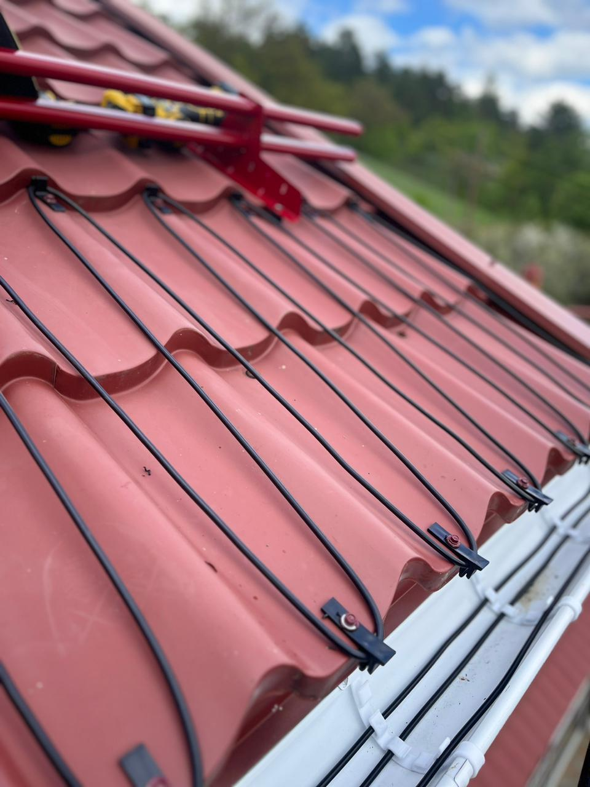
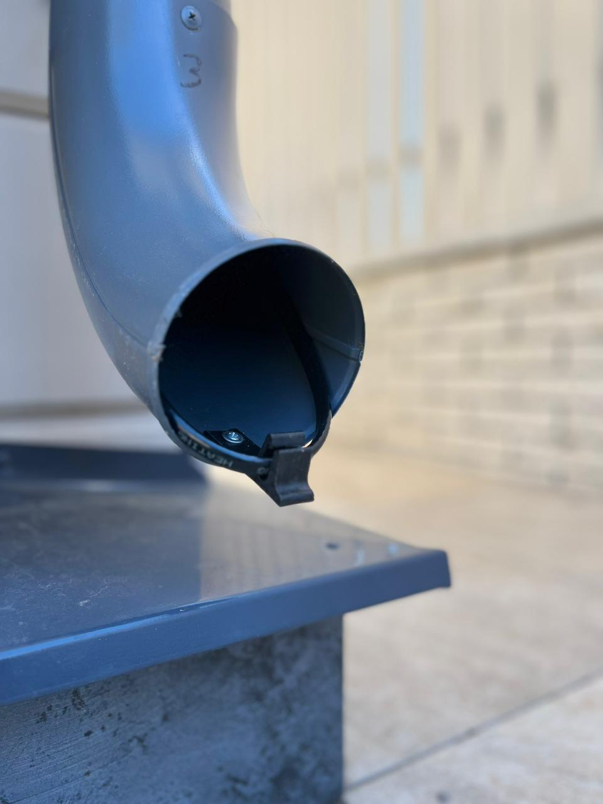
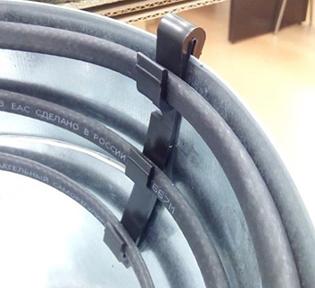
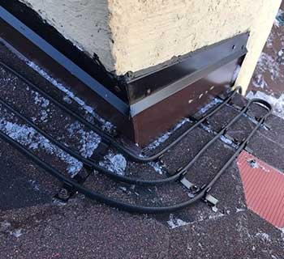
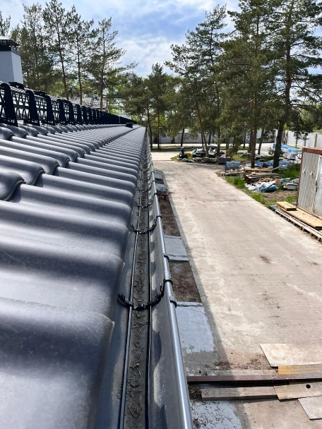